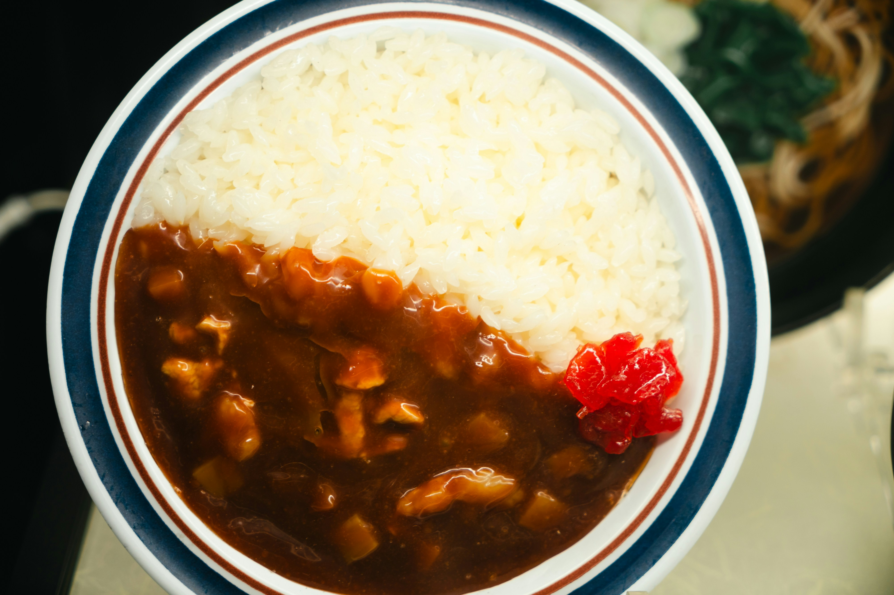

Home
Japanese Curry Recipe

Description
Japanese curry is a rich, mildly spicy, and slightly sweet dish made with
meat, vegetables, and curry roux. It's comforting, flavorful, and easy to
prepare—commonly served with rice.
Ingredients
- 300g chicken, beef, or pork (bite-sized pieces)
- 1 large onion, sliced
- 2 medium potatoes, peeled and chopped
- 2 carrots, sliced
- 3 cups water
- 1/2 box Japanese curry roux
- 2 tbsp oil
- Cooked white rice (for serving)
Steps
-
In a pot, heat oil and sauté the meat until lightly browned. Add onions,
carrots, and potatoes. Cook for a few minutes.
-
Pour in water and bring to a boil. Reduce heat and simmer for about
15-20 minutes, or until vegetables are tender.
-
Break the curry roux into blocks and stir it into the pot. Let it melt
and simmer on low heat for another 5-10 minutes, stirring occasionally
until thick.
- Spoon the curry over steamed white rice. Enjoy it hot!